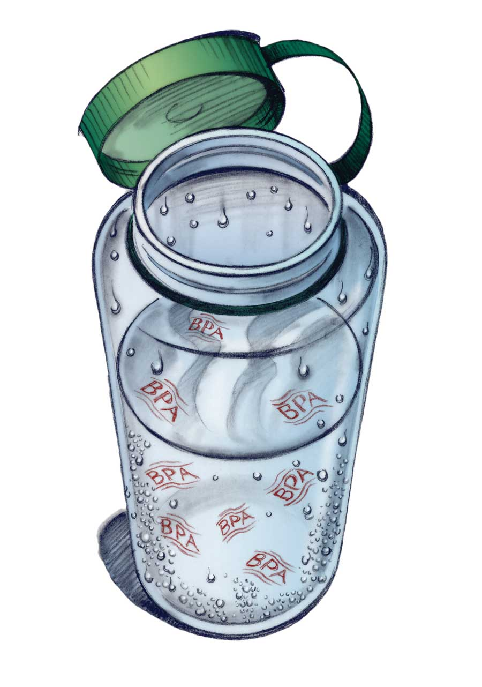
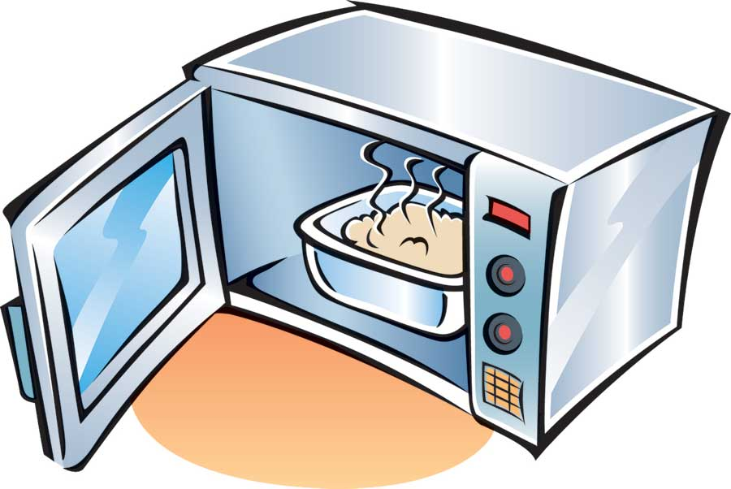
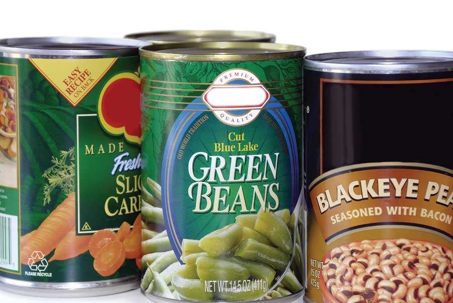

You’ve been out - working, exercising, shopping. You open the car door and slip into the ovenlike interior. Throat dry, you reach for the water bottle that’s been sitting in the cup holder all day. It’s warm. But at least it’s water, right? Water, yes, albeit water potentially spiked with chemicals that migrated out of the plastic - chemicals that aren’t good for your health.
The latest scientific research has given us a lot of good reasons to think carefully about how we use plastics. The main concern with several types of plastic is that they contain endocrine disruptors - substances that, when taken into our bodies, alter normal hormonal function. Over the past several years, scientists and the media have struggled to find answers to mysteries such as precocious puberty, declining fertility rates in otherwise healthy adults, hyperactivity in kids, the fattening of America, and the persistent scourges of prostate cancer and breast cancer. Although multiple factors play a role in all of these conditions, one recurrent theme is the brew of endocrine disruptors infiltrating our lives.
Endocrine disruptors (which are now widespread in food, water, soil and even the air we breathe) include a long list of chemicals such as dioxins, cadmium, parabens, bisphenol A, phthalates, polychlorinated biphenyls (PCBs), agricultural chemicals, polybrominated flame retardants, and some of the active ingredients in sunscreens.
Many of these chemicals cause problems because they can mimic the action of natural estrogen. These foreign estrogens (also known as xenoestrogens) can upset normal hormonal balance, stimulate the growth and development of reproductive tumors (breast, uterine, prostate), impair fertility, and disrupt pregnancy. Worse, many can cross the placenta to affect the fetus and get into breast milk. Chemicals such as phthalates have an antiandrogenic effect, meaning they interfere with testosterone and other hormones responsible for male sex characteristics. Exposure to these agents during fetal life and early childhood can derail normal sexual development and heighten the risk for diseases that don’t become apparent until adulthood, such as cancer.
One of the most troubling endocrine disruptors is a common ingredient in plastic called bisphenol A (commonly called BPA). According to Laura N. Vandenberg, who holds a doctorate in cell, molecular and developmental biology and works at the Center for Developmental and Regenerative Biology at Tufts University, “BPA is one of the highest volume chemicals produced worldwide, with over 6 billion pounds produced each year.”
Used to produce polycarbonate plastics and epoxy resins, BPA is found in many drinking containers, the lining of most food and beverage cans (including soda cans), bottle caps, plastic cutlery, plastic food storage containers, toys, dental sealants, some dental composites, water pipes, eyeglass lenses, and more. Polycarbonate is often blended with other plastics to create products such as mobile phone cases, car parts, electronic equipment, medical equipment and household items. Because BPA is in printer ink, newspapers and carbonless receipts, most recycled paper contains it, including paper towels and paper used to contain food.
The problem is that BPA migrates from the plastic into neighboring substances such as food, water and saliva. Heat, contact with acidic (think vinegar or soda) and alkaline (think baking soda) substances, and repeated washing of polycarbonate plastics accelerate the process. BPA also leaches into groundwater from plastics piled in landfills. Although most of our intake is dietary, BPA can also be inhaled, and can move across the skin into our blood by means of bath water.
Because it is so pervasive, we all have BPA on board. One study by the Centers for Disease Control and Prevention found BPA in 95 percent of urine samples. It’s also present in blood, amniotic fluid, fetal tissues, ovarian fluid and breast milk. Infants and small children take in more BPA than adults because - relative to their size - they breathe, drink and eat more, put everything within reach into their mouths, and don’t clear the chemical from their bodies as fast as adults.
Information on the potential dangers of BPA comes mostly from animal research. In lab rats and mice, even low doses during early development alter the reproductive hormone cycles in males and females. Specifically, females have earlier puberty, increased mammary (breast) development, prolonged estrous cycles (the equivalent of menstrual cycles), chromosomal abnormalities in their eggs, and other fertility problems. Males have decreased testosterone levels, fewer and less motile sperm, more abnormal sperm, increased prostate size, and changes reflecting a heightened risk for prostate cancer. In some studies, both males and females tend to weigh more and have more body fat. Exposure during fetal development can alter brain structure and function, and lead to subsequent behavioral changes, such as increased aggressiveness, impaired motor activity, anxious behavior and impaired learning.
Risk assessment reports before 2004 - particularly those funded by groups such as the American Plastics Council - dismissed the dangers to humans on the grounds that levels in humans fell short of the concentrations that caused ill effects in test-tube and animal studies.
However, Frederick vom Saal, who holds a doctorate in neurobiology and is a prominent researcher and professor at the University of Missouri, notes that of the 115 low-dose BPA studies published by the end of 2004, 94 found estrogen-like effects in animals. More pointedly, he says, “No industry funded studies have reported significant effects of low doses of BPA, although more than 90 percent of government funded studies have reported significant effects.”
In 2007, the University of North Carolina’s Chapel Hill Bisphenol A Expert Panel, which included Vandenberg and 38 other experts, published a report stating that human exposure levels are well within the range that has proven harmful to rats and mice. Furthermore, these adverse effects in lab animal studies mirror health conditions that have been on the rise in humans over the past 50 years: infertility, breast and prostate cancer, type-2 diabetes, obesity, attention deficit disorder, cardiovascular diseases, autism, and abnormal development of the penis. More research is needed to confirm these correlations.
Despite the Panel’s report, the U.S. National Toxicology Program’s (NTP) Center for the Evaluation of Risks to Human Reproduction issued a brief in April 2008 that fell short of sounding the alarm. In June 2008, the NTP Board of Scientific Counselors further downgraded some of the potential risks. In a nutshell, the NTP voiced “some concern” for neural and behavioral effects and effects on the prostate gland in fetuses, infants and children at current exposures. For the same age group, they said there is “minimal concern” about effects on the breast and on earlier puberty in girls. For adults, the concern about exposures adversely affecting pregnancy outcomes or the health of reproductive organs was “negligible.”
Among the long list of experts that responded to the NTP brief, the American Academy of Pediatrics said the report’s downplaying of the risks, particularly for infants and pregnant women, would falsely reassure the public. Sarah Janssen, science fellow for the Natural Resources Defense Council, responded to the brief more bluntly: “BPA should be considered a hazard to human development and reproduction with clear evidence of adverse effects.”
While the U.S. Food and Drug Administration maintains current levels of BPA are safe for humans, the Canadian government declared BPA toxic in April 2008, triggering a ban on the use of BPA in baby bottles. But in October, a group of scientific advisers to the U.S. FDA rejected the assessment, stating that the agency had ignored crucial studies and employed flawed methods in its research. As the FDA risk assessment continues, some states are proposing legislation that would ban many plastics containing BPA.
Phthalates represent another ubiquitous category of endocrine disruptors. Used to soften plastic, these chemicals pop up in PVC-containing plastic products, including:
With respect to pacifiers and baby bottle nipples, most companies have switched to latex- and silicone-based materials in their manufacturing.
Because phthalates aren’t tightly bound to plastics, they readily migrate into neighboring substances such as food, water, air and saliva. Phthalates are thus present in our urine, blood, breast milk, saliva, amniotic fluid and seminal fluid.
The biggest health concern is reproductive toxicity - particularly for males. Numerous animal studies link phthalate exposure during fetal development with malformations of parts of the male reproductive system. Reports of ill effects in females aren’t as numerous, although higher levels of these chemicals have been associated with early breast development in girls and endometriosis in women. Phthalates in indoor air have been associated with asthma and allergic conditions.
In 2005, the European Union banned three phthalate compounds from children’s toys and other children’s products. California has passed a law limiting exposure to di(2-ethylhexyl) phthalate (commonly known as DEHP). And Minnesota, Maryland, Maine and Oregon have proposed similar legislation. Washington state recently passed the Children’s Safe Products Act to protect kids from exposure to lead, cadmium and phthalates.
In addition to the potential health risks, there are many more reasons to reduce your use of plastic food containers, dishes and cutlery. Plastics consume resources that are largely nonrenewable (crude oil and natural gas), their use contributes to needless waste, and their production and degradation create pollution. Here are a few BPA safety tips for food and drink.
Avoiding phthalates is challenging because manufacturers aren’t required to list them as product ingredients.
Note: In 2007, the Natural Resources Defense Council tested 14 common air fresheners. Although none of them listed phthalates as an ingredient, 12 of the 14 contained these chemicals, including those advertised as unscented or “all natural.” Read the NRDC's full report on phthalates and air fresheners.
You can find links to the reference materials for this article in the Plastics and Endocrine Disruptors Article Resources, below. Plus, follow FDA reviews and regulation updates.
Here are few of the Internet sites that have information on endocrine disruptors and provide suggestions for product safety:
Caserta D, Maranghi L, Mantovani A. Impact of endocrine disruptor chemicals in gynaecology. Human Reproduction Update, 2008;14(1):59-72.
Sathyanarayana, S. Phthalates and Children’s health. Current Problems Pediatric Adolescent Health Care, 2/08;38:34-49.
Vandenberg LN, Hauser R, Marcus M, et al. Human exposure to bisphenol A (BPA). Reproductive Toxicology, 207;24:139-177.
Burridge E. Bisphenol A product profile. Eur Chem News 2003:13-20.
NTP Brief on Bisphenol A. National Toxicology Program, National Institute of Environmental Health Sciences
National Institutes of Health, U.S. Department of Health and Human Services. April 14, 2008 CAS NO. 80-05-7.
Vom Saal, FS. Comments on NTP April 2008 Draft Report on Bisphenol A, 5/26/08.
Vom Saal FS, Hughes C. An extensive new literature concerning low-dose effects of bisphenol A shows the need for a new risk assessment. Environmental Health Perspectives 2005;113(8):926-933.
Calafat AM, Kuklenyik Z, Reidy JA, et al. Urinary concentrations of bisphenol A and 4-nonylphenol in a human reference population. Environ Health Perspect, 2005;113:391-395.
Chapel Hill bisphenol A expert panel consensus statement: Integration of mechanisms, effects in animals and potential to impact human health at current levels of exposure. Reproductive Toxicology 2007;24:131-8.
Renée R. Jenkins, MD, FAAP, President of the American Academy of Pediatrics, May 23, 2008. Accessed 6/14/08 from http://cerhr.niehs.nih.gov/chemicals/bisphenol/pubcomm/BPA(34)AmerAcadPeds052308.pdf
NRDC Comments on the Draft NTP brief on Bisphenol A Federal Register / Vol. 73, No. 73 / Tuesday, April 15, 2008.
Davis, Mia. Public comment on NTP BPA draft, 5/23/08.
Davis M, Foulds J, Freeman A, et al. Baby’s Toxic Bottle: Bisphenol A Leaching from Popular Baby Bottles, 2/08.
Austen, Ian. “Canada takes steps to ban most plastic baby bottles.” New York Times, 4/19/08.
Heudorf U, Mersch-Sundermann V, Angerer J. Phthalates: Toxicology and exposure. Int. J. Hyg Environ. Health, 2007;210:623-34.
“About Phthalates.” Our Stolen Future.
Schettler T. Human exposure to phthalates via consumer products. Int J Androl. 2006 Feb;29(1):134-9.
Sathyanarayana, S. Phthalates and Children’s health. Curr Probl Pediatr Adolesc health Care, 2/08;38:34-49.
Heudorf U, Mersch-Sundermann V, Angerer J. Phthalates: toxicology and exposure. Int J Hyg Environ Health. 2007 Oct;210(5):623-34.
Colon I, Caro D, Bourdony CJ, Rosario O. Identification of phthalate esters in the serum of young Puero Rican girls with premature breast development. Environ Health Perspect 2000;108:895-900.
Reddy BS, Rozati R, Reddy BV, Raman NV. Association of phthalate esters with endometriosis in Indian women.
BJOG. 2006 May;113(5):515-20.
Mendell MJ. Indoor residential chemical emissions as risk factors for respiratory and allergic effects in children: a review. Indoor Air. 2007 Aug;17(4):259-77.
Committee on the Environment Public Health and Food Safety. Recommendation for second reading for adopting a directive relating to restrictions on the marketing and use of certain dangerous substances and preparations (phthalates in toys and childcare articles) 5467/1/2005-C6-0092/2005-1999/0238(COD). In: Parliament E, ed; 20 June 2005.
Evandri MG, Tucci P, Bolle P. Toxicological evaluation of commercial mineral water bottled in polyethylene terephthalate: a cytogenetic approach with Allium cepa. Food Additives and Contaminants, 2000, Vol. 17, No. 12, 1037-1045.
Matsumoto M, Hirata-Koizumi M, Ema M. Potential adverse effects of phthalic acid esters on human health: a review of recent studies on reproduction. Regul Toxicol Pharmacol. 2008 Feb;50(1):37-49.
Take Back the Tap. Food and Water Watch.
Moran, Susan. “A Turn to Alternative Chemicals.” New York Times, 3/26/08.
|
 STEPHEN HUTCHINGS Some water bottles can leach BPA into their contents when left out in the sun or otherwise heated. |
 STEPHEN HUTCHINGS BPA can leach into food when plastic food containers are heated. A better choice is to warm and store food in ceramic or glass containers. |
 FOTOLIA/DONDING Laura Vandenberg, Ph.D., says that “Canned foods are likely to be the highest contributor to BPA in our diets, not plastics.” |
|
FOTOLIA/ELENA KOUPTSOVA/VASIC Artificial fragrances, including those in perfumes, detergents, cleansers and personal-care products, commonly use diethyl phthalate (DEP). |
|
|